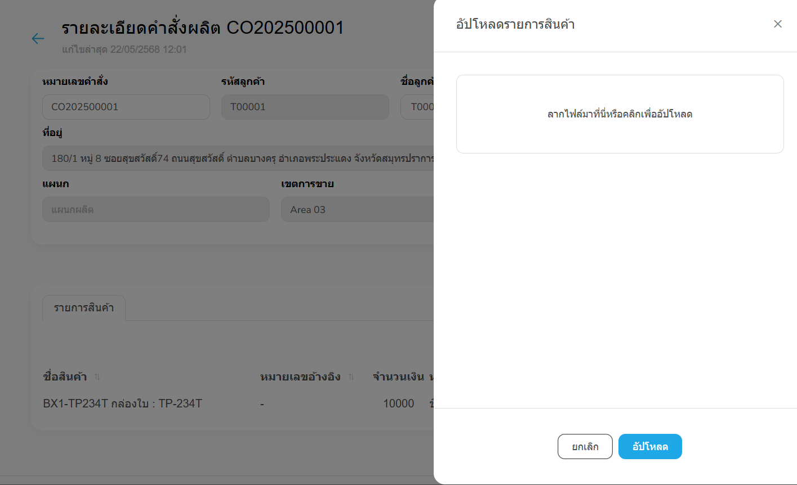

จัดการคำสั่งขาย
หน้าสำหรับเพิ่มและแก้ไขข้อมูลคำสั่งขาย
ภาพที่ 1: หน้าจัดการรายการคำสั่งขาย
องค์ประกอบหลักของหน้า
- ปุ่ม + เพิ่ม: ใช้สำหรับสร้างรายการคำสั่งขายใหม่
- ช่องค้นหา: สำหรับค้นหารายการตามชื่อคำสั่งขาย
-
ปุ่มตัวกรอง: สำหรับกรองรายการตามรหัสคำสั่งขาย, ชื่อลูกค้า,
ช่วงวันที่สร้าง และสถานะ
- รายการคำสั่งขาย: แสดงข้อมูลคำสั่งขาย พร้อมฟังก์ชันสำหรับแก้ไข
รายละเอียดคำสั่งขาย
ภาพที่ 2: หน้ารายละเอียดคำสั่งขาย
องค์ประกอบหลักของหน้า
จัดการคำสั่งผลิต
หน้าสำหรับเพิ่มและแก้ไขข้อมูลคำสั่งผลิต
ภาพที่ 1: หน้าจัดการรายการคำสั่งผลิต
องค์ประกอบหลักของหน้า
- ปุ่ม + เพิ่ม: ใช้สำหรับสร้างรายการคำสั่งผลิตใหม่
- ช่องค้นหา: ใช้สำหรับค้นหารายการคำสั่งผลิตตามชื่อ
-
ปุ่มตัวกรอง: สำหรับกรองรายการตามรหัสลูกค้า, ชื่อลูกค้า,
ช่วงวันที่สร้าง และสถานะ
-
รายการคำสั่งผลิต: แสดงข้อมูลคำสั่งผลิต พร้อมฟังก์ชันสำหรับแก้ไข
รายละเอียดคำสั่งผลิต
ภาพที่ 2: หน้ารายละเอียดคำสั่งผลิต
องค์ประกอบหลักของหน้า
- หมายเลขคำสั่งผลิต: เช่น MO0000004
- รหัสลูกค้า: เช่น T00001
- ชื่อลูกค้า: เลือกจากข้อมูลที่ลงทะเบียนไว้ในหน้าจัดการลูกค้า
-
ที่อยู่ลูกค้า: เช่น 180/1 หมู่ 8 ซอยสุขสวัสดิ์ 74 ถนนสุขสวัสดิ์
ตำบลบางครุ อำเภอพระประแดง จังหวัดสมุทรปราการ
- เครดิต: ข้อกำหนดด้านเครดิตของคำสั่งผลิต
-
ข้อมูลพนักงานขาย: แสดงแผนกและเขตการขายของพนักงาน
ซึ่งระบบจะดึงข้อมูลจากผู้ใช้งานที่เข้าสู่ระบบในขณะนั้น
- วันที่นำออกไป Express: แสดงวันที่นำออกไป Express
- หมายเลขอ้างอิง: หมายเลขอ้างอิงที่เกี่ยวข้องกับคำสั่งผลิต
-
รายการสินค้าในคำสั่งผลิต: ประกอบด้วยชื่อสินค้า หมายเลขอ้างอิง จำนวน
หน่วย ราคาต่อหน่วย ราคารวม วันที่กำหนดส่ง
โดยสามารถเพิ่มสินค้าได้จากปุ่ม “เพิ่มรายการสินค้า”
ภาพที่ 3: รายละเอียดคำสั่งผลิตเพิ่มเติม
-
เพิ่มรายการสินค้า: สามารถเพิ่มสินค้าโดยเลือกจากรายการสินค้า
ระบุจำนวนที่ต้องการจัดส่ง วันที่กำหนดส่ง และหมายเลขอ้างอิง

ภาพที่ 4: รายละเอียดคำสั่งผลิต - อัปโหลดรายการสินค้า
-
อัปโหลดรายการสินค้า:
สามารถนำเข้ารายการสินค้าได้โดยการเลือกไฟล์ที่มีนามสกุล .XLSX